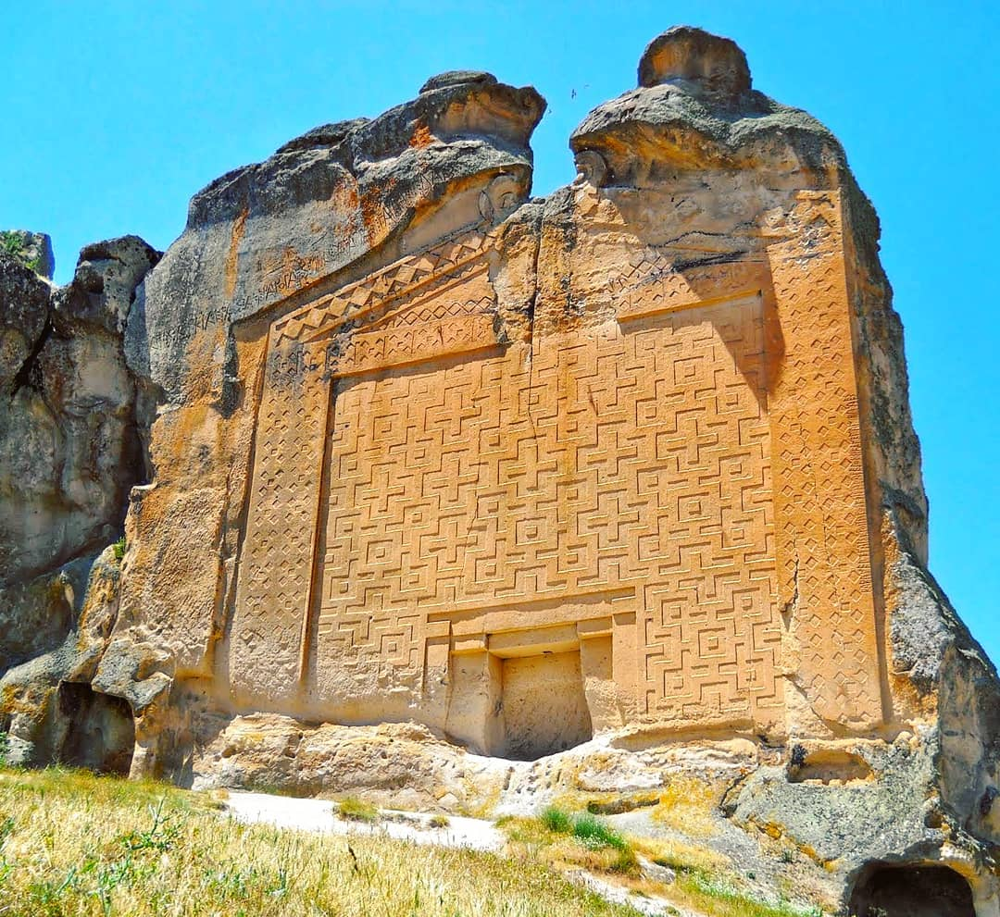
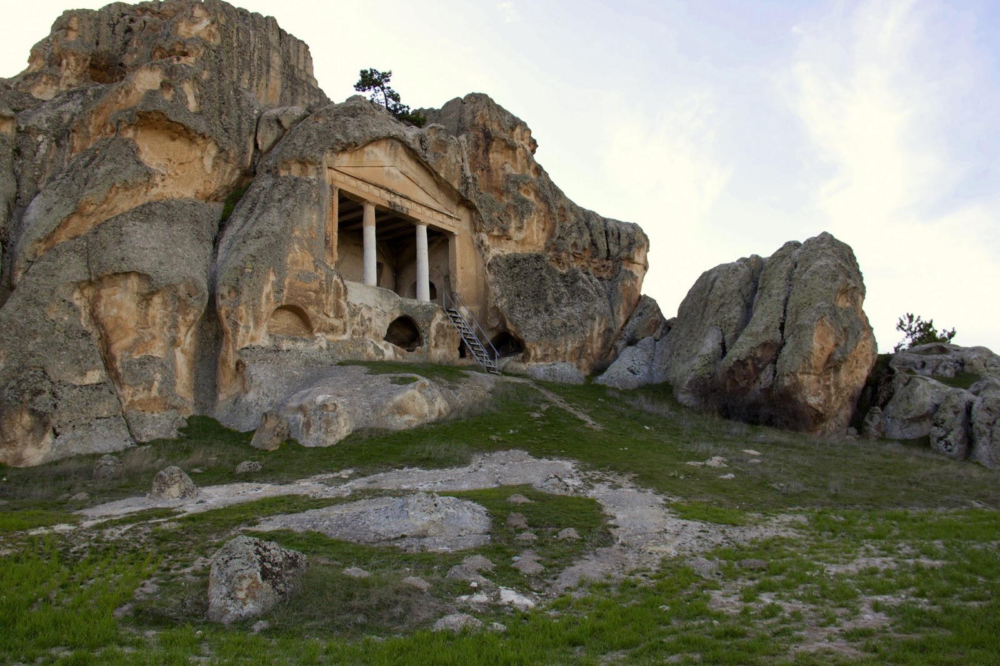
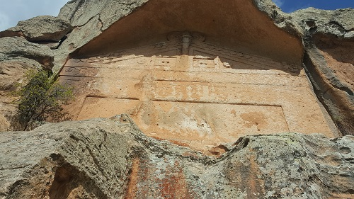

Midas Anıtı ya da diğer adıyla Yazılı Kaya Frig kaya fasadlarının en görkemli örneğidir. Anıtın sol üst kısmında, düzleştirilmiş ana kaya üzerindeki Frigce yazıtta geçen Midai kelimesinden dolayı anıta bu ad verilmiştir. Yöre halkı ise üzerindeki yazıtlar nedeni ile anıtı, Yazılı Kaya olarak adlandırmıştır.
M.Ö. 8. yyda güçlü bir devlet kuran ve Kral Midas ile uygarlıklarının ve sanatın zirvesine ulaşan Frigler kendilerine özgü ahşap mimari işçiliğini kayalara taşımış, bölgenin ve dünyanın ünik ve görkemli anıtı (Yazılıkaya) Midas Anıtı’nı yapmışlardır. Ayrıca bölgede açıkhava tapınakları, anıtlar, kaleler, sarnıçlar, vb. inşa etmişlerdir.
Yazılıkaya anıtının yaklaşık 500 metre güneybatısında yarım kalmış bir anıt daha. Yazılıkaya’nın hemen sağ yanından giden patikayı takip ederek buraya ulaşabilirsiniz. Bu iki anıtın, birbirine benzer ortak noktaları vardır. Özellikle, her ikisi de geometrik desenlerle süslenmiştir. Ancak küçük yazılı kaya anıtı tamamlanmamıştır.
  